Pictures of some flood-prone parts of the country
We are pray to Allha save me flood
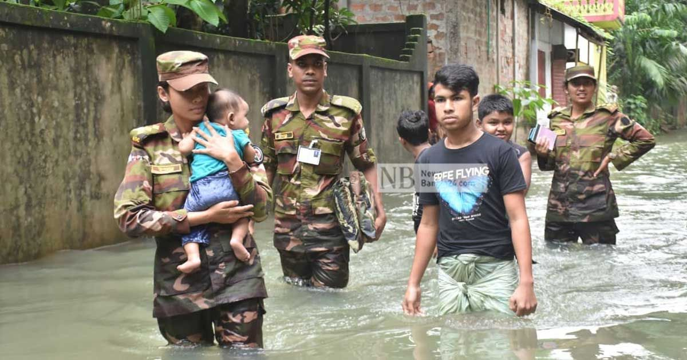


 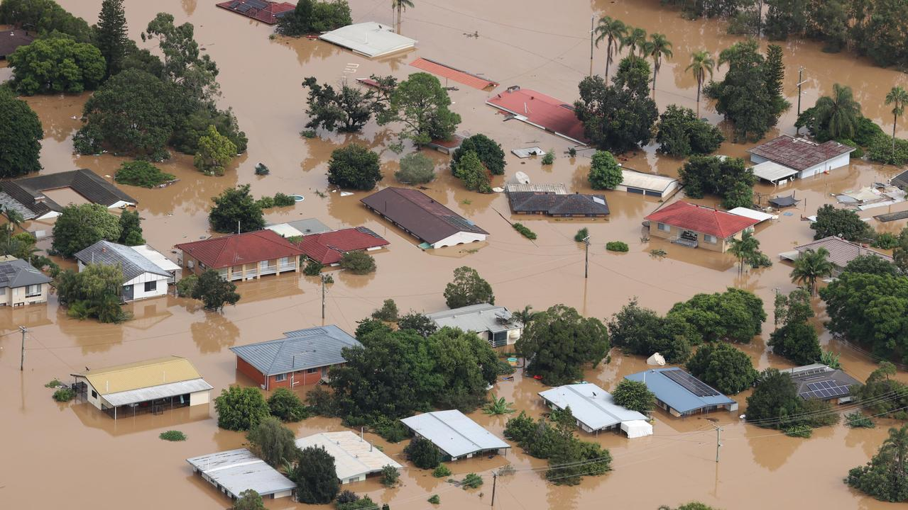
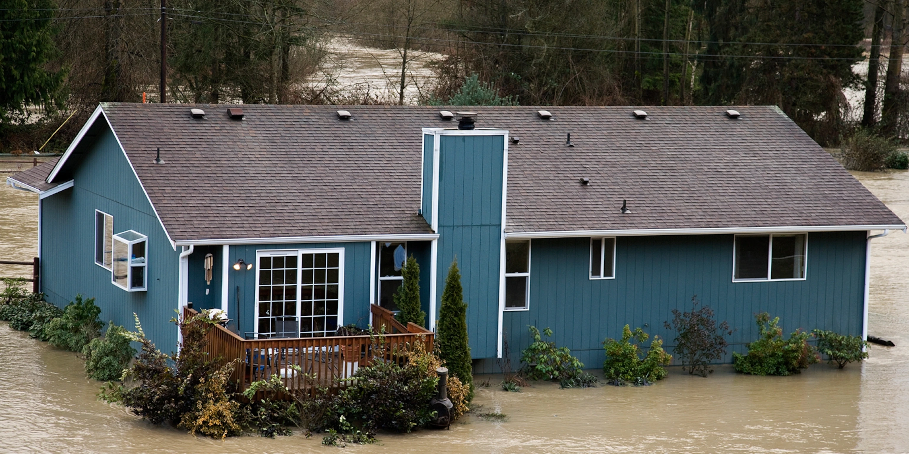
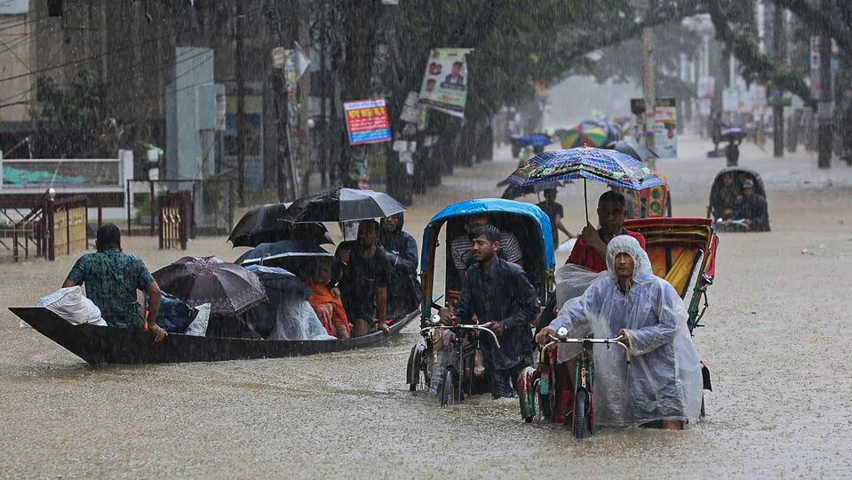
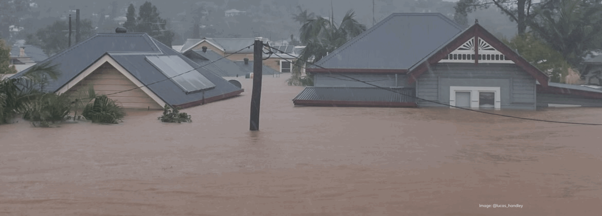
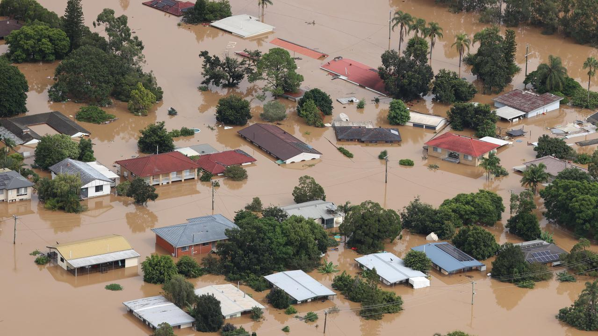
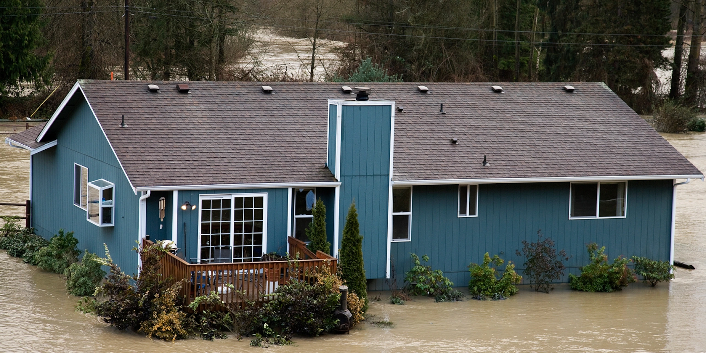
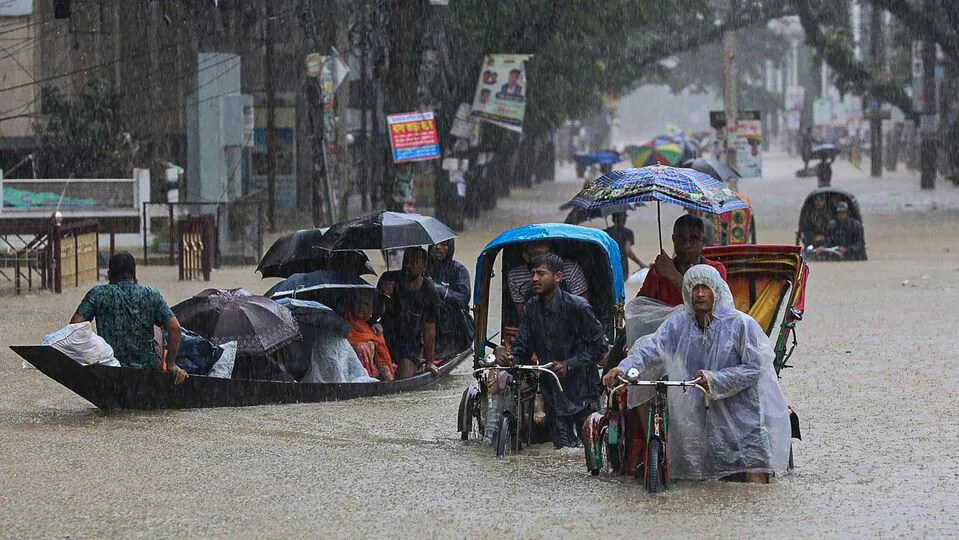
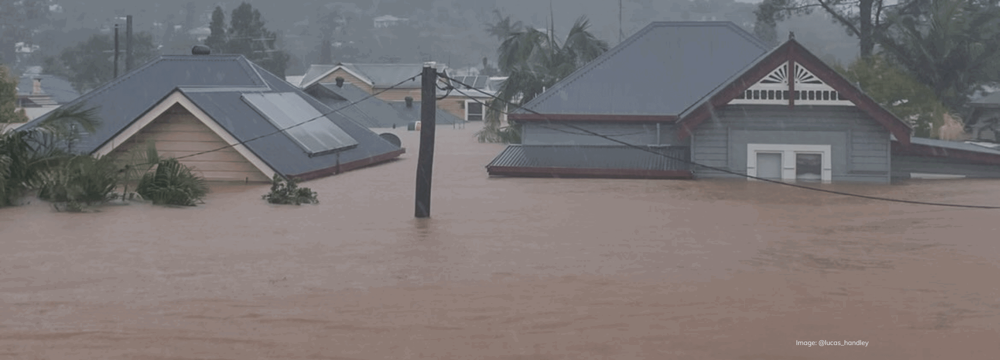
Floods can happen on flat or low-lying areas when water is supplied by rainfall or snowmelt more rapidly than it can either infiltrate or run off.
Small scale flooding in Bangladesh is required to sustain the agricultural industry, as sediment deposited by floodwaters fertilises fields.deposited by floodwaters fertilises fields.
We are pray to Allha save me flood
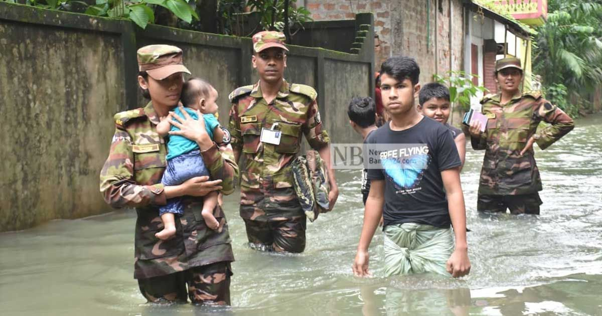
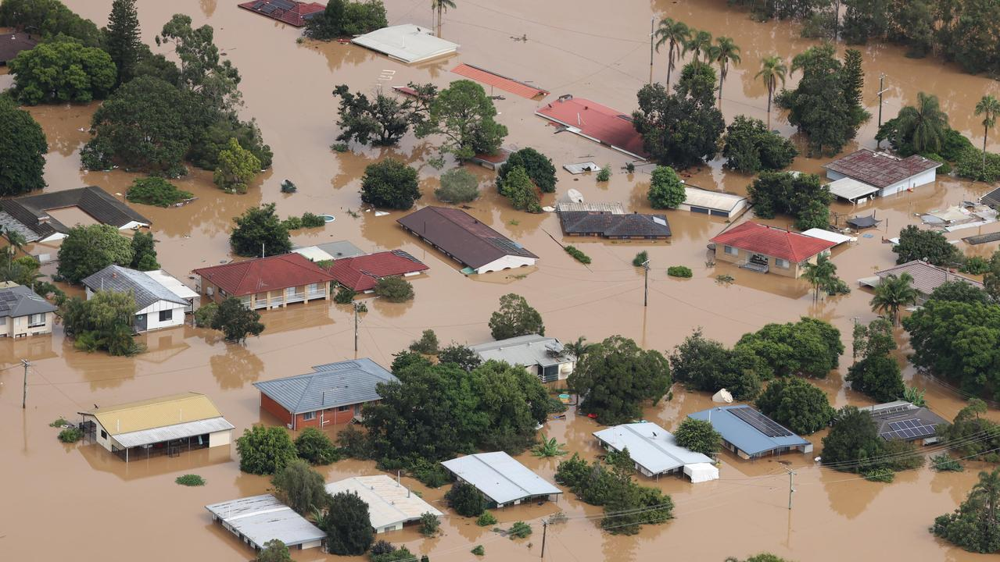
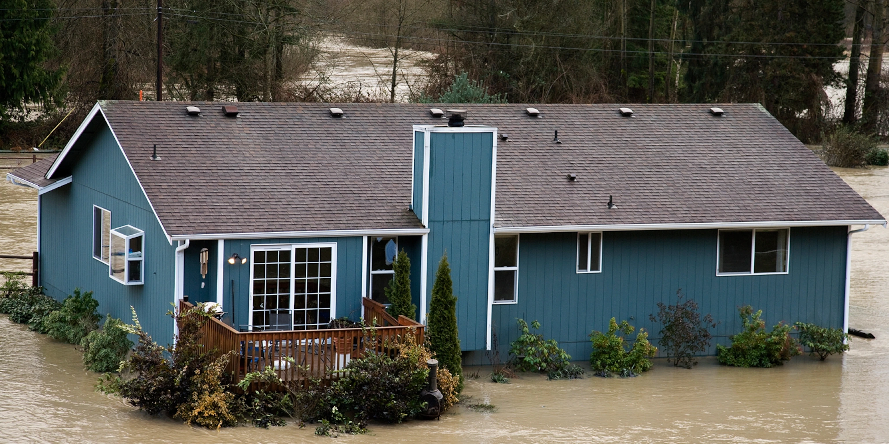
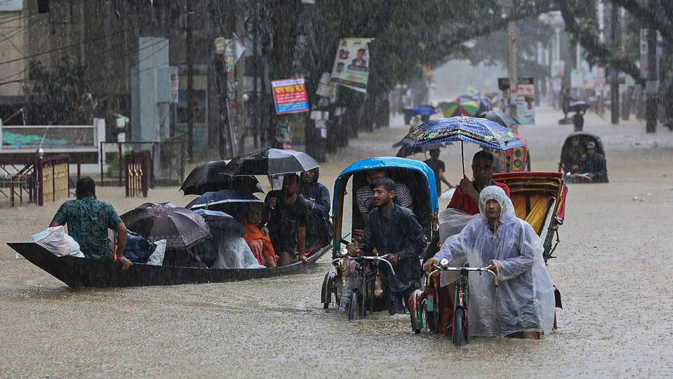
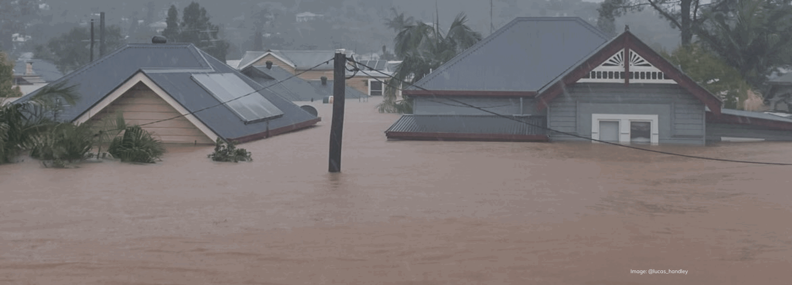
Small scale flooding in Bangladesh is required to sustain the agricultural industry, as sediment deposited by floodwaters fertilises fields.deposited by floodwaters fertilises fields.
Listed below are notable people who are either citizens of Bangladesh, born in the region of what is now Bangladesh, or of Bangladeshi origin living abroad. For brevity, people who fall into more than one category are listed in only one of them. sequencing the genomes of papaya, rubber plants
Health care professionals involved in rehabilitation are often involved in discharge planning for patients. When considering patient discharge, there are a number of factors to take into consideration. discharge planning over a standard format, though this
The Economy of Bangladesh is characterised as a developing market economy.[40] It is the 41st largest in the world in nominal terms or at current prices, and 30th largest by purchasing power parity; international dollars at current prices.It is classified among the Next Eleven emerging

(Md.johirul Islam)
The martial tradition of Bengal has its roots in the army of Kings and their chiefs who were called Senapati or Mahasenapati. Armies were composed of infantry, cavalry, war elephants and war boats. The arrival of Muslims and the establishment of the Bengal Sultanate further strengthened the military. The sultanate had well organised disciplined armies. During Mughal rule cannons and artillery were introduced to Bengal.[9] During the Colonial Rule of the British, Bengal was principally a bulwark of British power and trade in the South Asian region. The British under Robert Clive defeated a 50,000 strong Bengal Army of Nawab Siraj-ud-daullah in the Palashi(Plassey) in 1757 and later the forces of Nawab Mir Qasim at the Battle of Buxar in 1764. The Army of Bengal was formed, which later became part of a united British Indian Army from 1895 to 1947. The eastern part of the British India was a prominent place for military and police recruitment, with entire horse-mounted cavalry and lancer units being recruited there prior to the Bengal Sepoy Mutiny of 1857. [10][11] Post-mutiny, units with the epithet "Bengal" in their name, such as Bengal Sappers and Bengal Cavalry, were largely recruited from non-Bengali peoples from Bihar, Varanasi and Uttar Pradesh which were technically still part of Bengal Presidency at that time.[9][12] During the First World War, the Bangali Paltan was formed to recruit soldiers from Bengal. In 1916, the British Government created Bengali Double Company. The soldiers were trained in Karachi and shipped to the Bagdad. They fought in the war and after the war helped crush a rebellion by Kurds in 1919.
Small scale flooding in Bangladesh is required to sustain the agricultural industry, as sediment deposited by floodwaters fertilises fields.deposited by floodwaters fertilises fields.